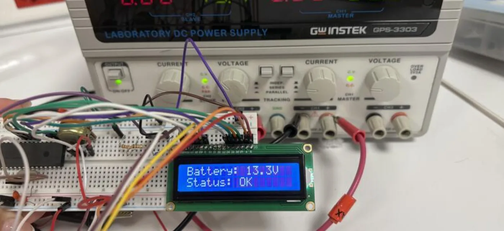

Overview
A PIC16F877A microcontroller measures the battery through a voltage divider, converts the reading with its 10-bit ADC and prints both the voltage and a health status on a 16 × 2 LCD. I designed the divider circuit and wrote the firmware in embedded C.
The photo is the working prototype on the bench, reading 13.3 V — Status: OK.

How it works
- ScaleA 1 : 4 voltage divider brings the battery voltage into the ADC’s 0–5 V range on pin RA0/AN0.
- MeasureThe 10-bit ADC samples the input against VDD/VSS and the firmware multiplies the result back by four.
- ClassifyThe reading is mapped to one of six health states (table below).
- DisplayVoltage on the first LCD row, status on the second — refreshed every second and redrawn only when the value moves by 0.1 V or more.
Health states
| Battery voltage | LCD status |
|---|---|
| above 14.8 V | HIGH |
| 14.4 – 14.8 V | CHARGING |
| 13.8 – 14.4 V | GOOD |
| 12.6 – 13.8 V | OK |
| 11.5 – 12.6 V | LOW |
| below 11.5 V | CRITICAL |
What’s in the source code
A single C source file for Microchip’s XC8 compiler.
voltage-monitoring-sys.cADC setup, 4-bit LCD driver on PORTD, the status thresholds and the main loopREADME.mdSystem overview and hardware description